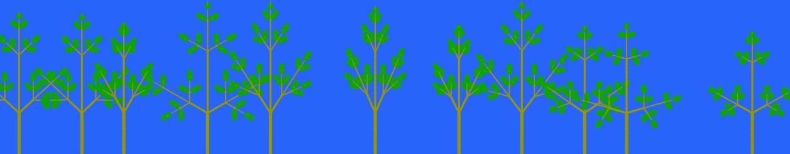
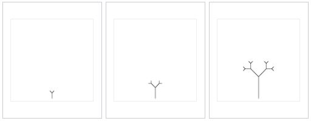

This program was created to simulate the interspecific competition that trees in a forest face for sunlight. Initially, the saplings are planted throughout the forest floor with a certain density. This initial density of saplings is much higher than the density of fully grown trees in a forest. The trees are simulated using Lindenmayer Systems, more commonly referred to as L-Systems (I describe them in the section below, but briefly speaking, L-Systems were invented by a biologist as a way of mathematically simulating plant growth that creates realistic results). Each sappling has random attributes that are analagous to different species of trees in the forest. Things that are varries amongst the trees include the angle the branches make with the trunk, and the ratio of the branch length to the trunk length. Each "day", a certain amount of sunlight reaches the forest. The sunlight is represented by the yellow dots that fall from the sky using an equal distribution, with a little bit of position and velocity randomness introduced simply for visual effect. If the sunlight hits a leaf on a tree, represented by the green circles, then the tree gains a constant amount of energy. At the end of the "day", trees which have obtained engouh energy to grow, will grow, and those which have not, will die. The amount of energy needed for a tree to grow and live is proportional to its mass (which can be seen as the size of the tree on the screen). If a sappling were left alone in the forest, it would always have enough energy to grow and live. However, there is competition amongst the sapplings for light, since the sunlight gets absorbed by the leaves of other trees. Those trees that got enough energy to grow, will follow the L-System algorithm to get bigger, and produce more branches and more leaves. This cycle repeats indefinitely, and ultimately only a few trees will be left in the forest.
Here is an example end state after a few mintues which shows some of the characteristics described above:
L-systems are used to describe the behaviour of plant cells and to model the growth processes of plant development. They were intially created by Aristid Lindenmayer, a Hungarian theoretical biologist and botanist who was trying to explain the growth of algae. People saw the value in this system, and later adapted it to more compelx organisms like shrubs and trees. This is Lindenmayer's initial L-system that described algae growth.
Start with the symbol A, this single symbol represents the first generation (n=0) and is called the axiom
Each new generation will follow these simple rules: replace all A's with AB, and replace all B's with A's. This can be written as (A -> AB), (B -> A). Following this rule will yield the following in the next generations:
n = 0: A
n = 1: AB
n = 2: ABA
n = 3: ABAAB
n = 4: ABAABABA
After 4 generations, the initial string A got converted into ABAABABA. This shows how by repeating the same rule over and over again, a more complex object is formed, this is mathematically known as a parallel rewriting system. So how did I go from this to a tree? I just change the symbols and the rules to generate a different pattern of symbols. Then I write a program to interpet the pattern of symbols and draw it. For my trees I used:
Axiom (starting symbol): X Rules: (X -> F[!%-X][!%+X]!%FX), (F -> FF)
So by following these rules we obtain:
n = 0: X
n = 1: F[!%-X][!%+X]!%FX
n = 2: FF[!%-F[!%-X][!%+X]!%FX][!%+F[!%-X][!%+X]!%FX]!%FFF[!%-X][!%+X]!%FX
n = 3: FFFF[!%-FF[!%-F[!%-X][!%+X]!%FX][!%+F[!%-X][!%+X]!%FX]!%FFF[!%-X][!%+X]!%FX][!%+FF[!%-F[!%-X][!%+X]!%FX][!%+F[!%-X][!%+X]!%FX]!%FFF[!%-X][!%+X]!%FX]!%FFFFFF[!%-F[!%-X][!%+X]!%FX][!%+F[!%-X][!%+X]!%FX]!%FFF[!%-X][!%+X]!%FX
This is the string representation of the tree. My program generates this and turns it into a visual representation by interpreting the symbols. F means draw one unit length forward, so FF means draw two unit lengths, and so on. From this rule, we can see the elongation of the trunk and branches. Since after each generation, F -> FF, each branch will increase in size. Then there are the + and - signs. These mean turn clockwise by a certain angle (the branching angle) or turn counterclockwise. This means when there is a +F, it will draw a branch at an angle from the trunk. The open an close brackets are just used to show when a new branch is forming, so when there is a closing bracket, it means there is a leaf, and after drawing the leaf it will return to where the branch joins to trunk to continue drawing other branches. The ! and % are used to control the thickness and length scaling factors, since trees get skinnier as they branch out more.
A more intuitive interpretation would be to start with a single green stem, with two leaves. As the tree grows, first, the leaves are each replaced by a small branch with two leaves, then the stem grows in length. Now you have a stem, with two branches, and each branch has two leaves. If you repeat this processes you get a stem with two branches, each branch has two branches, and each of those has two leaves, meanwhile all the branches and stems are growing in length. This simplified interpretation can be seen below:
